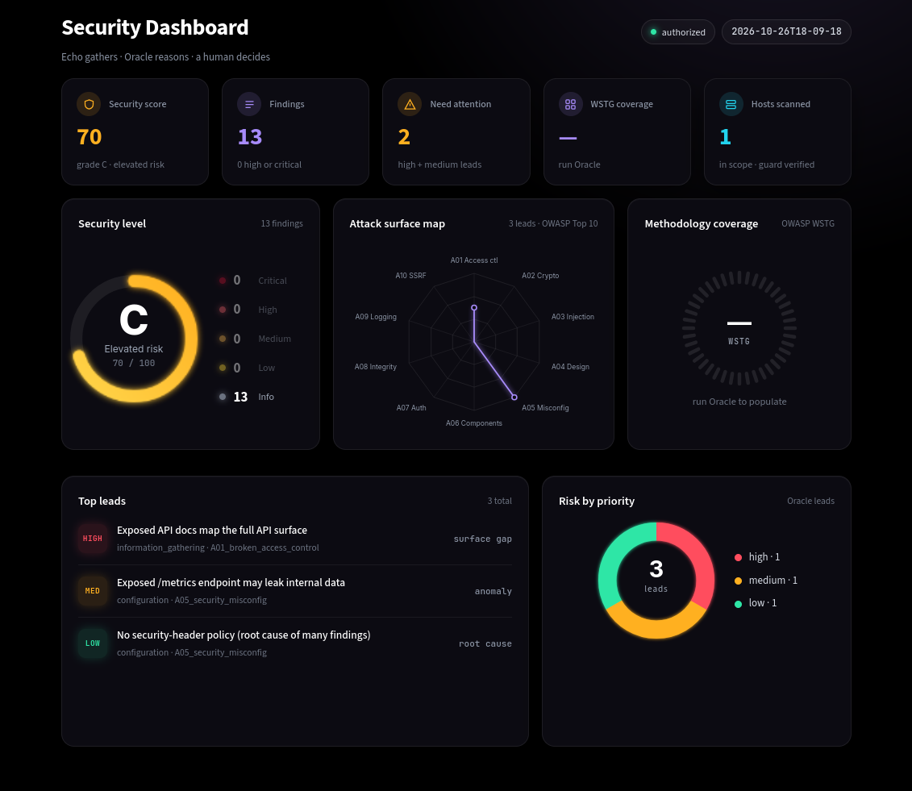

Echo Oracle
An AI-assisted reconnaissance and triage toolkit for authorized security assessment.
Echo gathers. Oracle reasons. A human decides. A deliberately human-in-the-loop design for bug bounty and penetration-testing work on targets you are authorized to test.
A scanner that thinks, with a human at the controls
Echo wraps the standard open-source recon tools behind one command and uses AI to cut scanner noise. Oracle, its reasoning engine, reads a finished run and surfaces the non-obvious, in-scope leads a checklist scanner walks past.
Echo collects. Oracle reasons.
Echo
the data engine
Oracle
the reasoning engine
What sets it apart
Finds the overlooked
Reasons about in-scope surface recon never examined: endpoints a spec reveals, paths a stack implies. Not just known-bad patterns.
Coverage gaps as a map
Reports which WSTG categories the evidence cannot yet assess, turning absence of findings into a to-do list rather than a false all-clear.
Two models, one verdict
Independent assessments from different labs, reconciled by a blind reviewer. Agreement raises confidence; disagreement earns your attention.
Read-only by design
Oracle proposes information-gathering checks and flags what a human should test by hand. It never exploits.
A scout, not an attacker
The line that keeps this legal to run and honest to present. These are enforced in the architecture, not just stated.
One pipeline, or step by step
Check scope first, always. Then run the whole pipeline in one command, or drive each stage yourself. The Stages tab explains what each one writes.
python -m echov scope-check --target app.example.com
# full pipeline: scan, triage, detect, reason, report
python -m echov assess --target app.example.com
# or re-analyze a finished run: two models, then a blind reviewer merges them
python -m echov oracle crosscheck --reconcile
# view it live in the security console
python -m streamlit run dashboard/console.py
STACK
ROADMAP
- Echo — scanners, scope guard, detection, triage, report, dashboard
- Oracle — reasoning core, WSTG methodology, coverage map
- Cross-check — multi-model review with blind reconciliation
- Severity — CVSS v3.1 banding on every finding
- Console — redesigned security dashboard
- Next — first run against a live authorized program
GUIDE/01 OF 05/SETUP
Install once, snapshot, then work from the snapshot
Echo Oracle runs on a dedicated Kali Linux VM. The scanners are Go binaries; the tool itself is a Python package. Practice targets run in Docker and bind to localhost only, so they are reachable from inside the VM and nowhere else.
go install -v github.com/projectdiscovery/subfinder/v2/cmd/subfinder@latest
go install -v github.com/projectdiscovery/httpx/cmd/httpx@latest
go install -v github.com/projectdiscovery/nuclei/v3/cmd/nuclei@latest
echo 'export PATH=$HOME/go/bin:$PATH' >> ~/.zshrc && source ~/.zshrc
nuclei -update-templates
# 2 project
git clone https://github.com/SomebodiyLost/echo-oracle.git && cd echo-oracle
python3 -m venv .venv && source .venv/bin/activate
pip install -r requirements.txt
# 3 keys, 4 scope
cp .env.example .env
cp scope.example.yaml scope.yaml
# 5 verify
which subfinder httpx nuclei
httpx -version && subfinder -version && nuclei -version
python -m echov scope-check --target juice.lab.local
Scope guard: ALLOW juice.lab.local matched allow rule "*.lab.local"
GUIDE/02 OF 05/THE FIVE STAGES
What each stage does, and what it leaves on disk
python -m echov assess runs them in this order and finishes with the Markdown report. Every stage can also be run on its own, and each reads the previous one's output from the run folder (the newest run unless you pass --run), so a re-run of Oracle never re-scans. No API key yet? --mock on triage, oracle analyze or assess uses offline reasoning at no cost.
in scope.yaml
out scope_decisions.json
in allowed hosts
out findings.json, assets.json
in findings.json
out triaged.json
in assets.json
out detections.json
in the full run folder
out oracle_analysis.json, oracle_analysis.html
then python -m echov report → report.md
in report.md, oracle_analysis.html
out your call
GUIDE/03 OF 05/EXAMPLE SCENARIOS
Four runs you can reproduce on the lab targets
Each one shows the output you should expect and the part of it worth reading closely.
Full one-shot run
Juice Shop in the lab, in scope. One command runs every stage.
1/4 scanning 7 hosts, 3 live
2/4 triaging 2 high · 3 medium · 14 suppressed
3/4 detection Express, no WAF
4/4 oracle 5 leads, coverage 4/10
Quick scope check
Sends nothing. Here a lookalike host that resembles the target is not in the allow list.
Scope guard: BLOCKED notmylab.local
verdict LEAD not in allow list (lookalike)
found by subfinder
log data/runs/.../scope_decisions.json
Re-analyze a finished run with the cross-check
Two models read the same evidence; neither sees the other's answer. Here they disagree.
A HIGH exposed API spec (A01)
B MEDIUM exposed API spec (A05)
priority split high vs medium
reviewer HIGH reasoning attached
No findings is not an all-clear
A quiet run on a small target. Oracle reports what it could not assess.
leads 0
coverage 2/10 assessed
gaps WSTG-ATHN, WSTG-SESS, WSTG-INPV ...
next 3 manual checks proposed
GUIDE/04 OF 05/READING THE OUTPUT
The same colors and labels everywhere
Terminal, report and console use one legend. Severity is the triage verdict on a finding; the scope verdict is the guard's decision on a host; the lead fields are what Oracle attaches to every item it ranks.
SEVERITY · CVSS v3.1
- CRITCritical
9.0 – 10.0
Verify by hand before anything else. - HIGHHigh
7.0 – 8.9
Serious; usually one step from proof. - MEDMedium
4.0 – 6.9
Worth reporting; limited impact alone. - LOWLow
0.1 – 3.9
Hygiene. Often the root cause of several mediums. - INFOInfo
0.0
Recorded for context. Not a finding.
LEAD PRIORITY · ORACLE
- HIGHLook here first
Oracle judges this the most worth investigating. - MEDWorth a pass
Plausible from the stack or the findings; needs a manual check to confirm. - LOWBackground
Hygiene or context. Usually explains other items rather than standing alone.
A separate axis from CVSS. Findings get a severity, up to Critical; leads only ever get high, medium or low. Every lead carries a read-only next check and a step to test by hand.
FLAGS
- needs human reviewSet by triage
The finding could not be confirmed from the evidence alone; the report says Verify manually. Example: an exposed /metrics endpoint where the scan did not capture the page contents. - priority splitSet by crosscheck
The two models gave the same lead different priorities. Shown as-is; with --reconcile the reviewer picks one and says why.
SCOPE VERDICT · GUARD
- ALLOWIn scope
Matched an allow rule and no deny rule. - LEADBlocked, worth a look
Discovered but not in the allow list. Logged for you to add or ignore. Nothing sent. - DENYBlocked, explicitly
Matched a deny rule. Logged with the rule, never scanned.
GUIDE/05 OF 05/DASHBOARD
The security console, reading the same run folder
A Streamlit app over the files the stages write. No database and no second copy of the data: what the terminal printed is what the console shows, with the suppressed items and scope decisions one click away.

python -m streamlit run dashboard/console.py